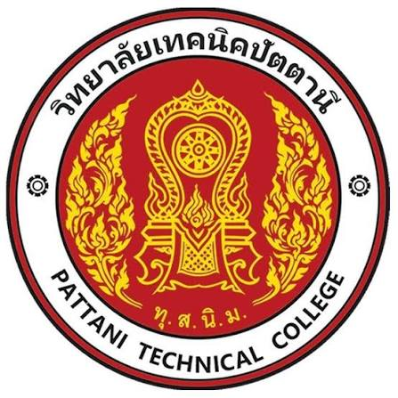

มหาวิทยาลัยเทคโนโลยีราชมงคลศรีวิชัย สงขลา
คณะวิศวกรรมศาสตร์ · สาขาวิศวกรรมคอมพิวเตอร์
เกรดเฉลี่ยสะสม (GPAX): 3.45
ศึกษาองค์ความรู้ด้านวิศวกรรมคอมพิวเตอร์ พร้อมต่อยอดทักษะด้านระบบเครือข่าย การดูแลระบบ และการพัฒนาโปรเจกต์เทคโนโลยี
พื้นฐานด้านวิศวกรรมคอมพิวเตอร์และเทคนิคคอมพิวเตอร์
เส้นทางการศึกษาที่ผสมผสานพื้นฐานด้านคอมพิวเตอร์เข้ากับการเรียนรู้ระบบเครือข่าย ฮาร์ดแวร์ และซอฟต์แวร์
คณะวิศวกรรมศาสตร์ · สาขาวิศวกรรมคอมพิวเตอร์
เกรดเฉลี่ยสะสม (GPAX): 3.45
ศึกษาองค์ความรู้ด้านวิศวกรรมคอมพิวเตอร์ พร้อมต่อยอดทักษะด้านระบบเครือข่าย การดูแลระบบ และการพัฒนาโปรเจกต์เทคโนโลยี

ประกาศนียบัตรวิชาชีพ (ปวช.) · สาขาช่างเทคนิคคอมพิวเตอร์
เกรดเฉลี่ย: 3.56
วางรากฐานด้านการประกอบและดูแลคอมพิวเตอร์ ซึ่งนำไปต่อยอดสู่การศึกษาวิศวกรรมคอมพิวเตอร์